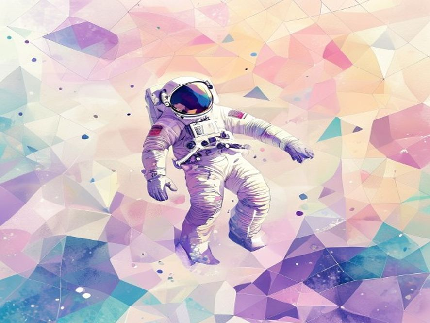
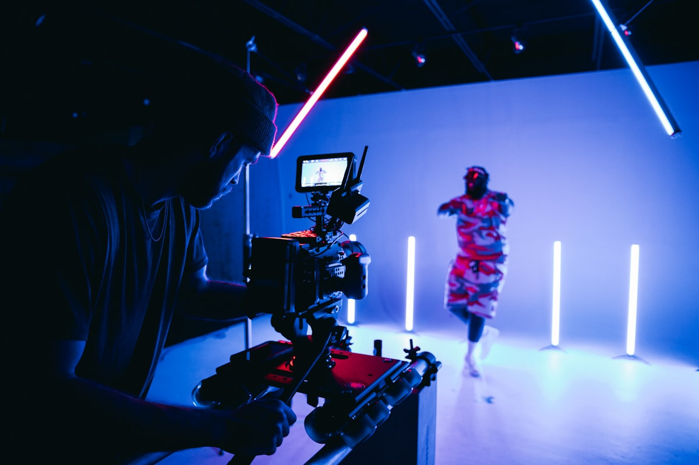

How AI turns a sentence into a picture.
You write a sentence — something like "a quiet library at sunset" — and the model gives you back a picture that matches it. That's the whole idea. Behind the scenes, the model has been trained on millions of image-and-caption pairs, so it has a pretty good sense of what each kind of scene looks like. The three tools below take different approaches: one leans artistic, one tries to follow your prompt literally, and one is open enough that you can tweak it yourself.
Known for highly artistic, cinematic results. Runs through a Discord interface and a paid subscription. Best when you want a polished look without tweaking many settings.
Made by OpenAI, available inside ChatGPT. Tends to follow long, specific prompts more literally than other tools, which makes it useful for illustrations and concept work.
Open-source. Can run on a personal computer with a decent GPU. Many community variants exist for specific styles (anime, photorealistic, architectural, etc.).
Eight short examples. Four AI-generated illustrations and four real photographs, exported as WEBP/AVIF for performance.
A quiet library at sunset.
🤖 Generated by AI
Watercolor astronaut concept.
🤖 Generated by AISound visualization.
🤖 Generated by AIMachine creativity, illustrated.
🤖 Generated by AIAI tools start with code.

Voice tools demand a clean signal.

Cameras stay relevant; AI complements them.
Understanding the basics first.
These tools still have weak spots: hands and text often come out wrong, the output can carry biases learned from the training data, and the legal status of training on copyrighted images is still under debate. Treat generated images as drafts, and always disclose when an image was made by AI. And honestly this list isn't complete — new issues keep coming up as the tools get more capable.